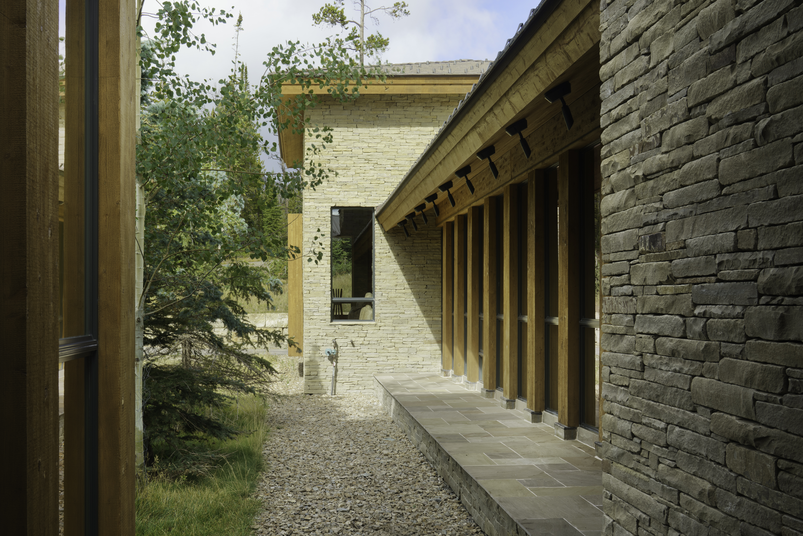

Project Details
A monumental compound built from the mountain itself.
Andesite Ridge is a family compound built entirely of locally quarried stone. Set into the ridge, the home is anchored to its landscape — and from nearly every room, the vistas of the surrounding mountains are front and center.
Tall, spanning timber — locally harvested — lifts the ceilings like an aperture, drawing sky and mountain light deep into the interior.
